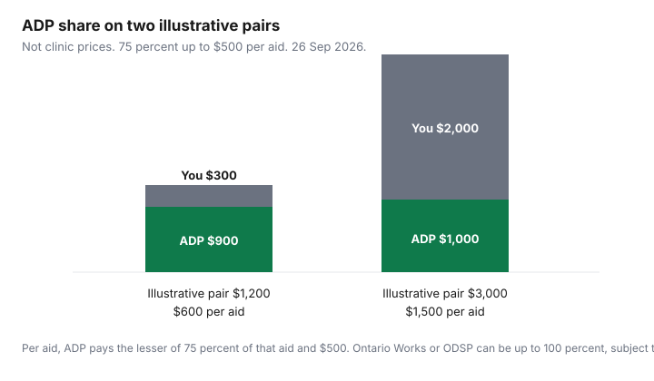

Healthcare · Canada
Hearing Aids in Canada: What They Cost, Provincial Funding (Ontario ADP), and How to Shop Without Overpaying
A hearing aid is a device plus a service plan, and in Ontario a public program may pay part of an approved device if you finish the paperwork before you buy. This page uses the Assistive Devices Program rules that were on ontario.ca on 26 Sep 2026. It does not rank brands, clinics, or warehouse hearing centres. It does not print a “typical pair costs” range, because no dated clinic price list was opened. The chart uses two made-up pair prices so you can see the 75 percent cap. Your quote replaces those numbers. This is education, not a recommendation to buy, and not tax advice.
Key takeaways
- Ontario’s Assistive Devices Program pays 75 percent of a hearing aid up to $500 per side, so up to $1,000 for a pair when both aids hit the cap. You pay the rest. Income is not a test. Page updated 2 March 2026.
- Ontario Works, the Ontario Disability Support Program, and Assistance for Children with Severe Disabilities can be funded up to 100 percent, subject to maximums in the program manual.
- From 2 March 2026 the application form no longer asks for a prescriber’s signature. A prescription from an audiologist or a physician is still required. Buy only after the ADP steps, or the program pays nothing.
- Veterans Affairs publishes a benefit grid, updated weekly. One entry-level code opened at $795. That is a grid maximum for that code, not a retail pair price. WSIB dollar amounts were not opened.
- The medical expense tax credit can include hearing aids, repairs, and batteries you actually paid. Amounts ADP or a plan paid are not claimed again.
Price ranges and what drives them: tech level, bundling and service plans
What changes a quote is not a mystery, even when the dollar range is. Technology level is the processor and the features the manufacturer puts in a family of aids. Bundling is whether fitting, follow-up visits, batteries or a charger, a warranty, and loss-and-damage coverage are inside one number or written as extras. A service plan that includes three years of adjustments is a different product from a device in a box. Two clinics can quote different totals for the same technology level because one buried the follow-up visits and the other did not.
No dated official or clinic page opened for this draft published a low-to-high pair price for Canada, so this page refuses the range. Ask each clinic for the unbundled lines in the second table, for the same technology level, on the same day. Then apply the ADP arithmetic yourself. A lower device price at a seller who is not an ADP-registered vendor can cost more once you lose the public contribution. A higher device price at a registered vendor can cost less after the program pays its share. The registration check comes before the brand conversation. This page does not pick a brand.
Ontario ADP: 75% up to $500 per aid ($1,000 a pair), up to 100% for OW/ODSP
The hearing-devices page, updated 2 March 2026, says you qualify if you are an Ontario resident with a valid health card and a disability that requires a hearing device for six months or longer. Income is not considered. You do not qualify if the Workplace Safety and Insurance Board is already funding the same device, or if you are a Group A veteran already receiving Veterans Affairs Canada funding for the same device. Covered hearing aids include behind-the-ear, in-the-ear, partially in the canal, and completely in the canal. Frequency-modulation systems are covered separately: 75 percent up to $1,350. The program does not pay to replace a lost aid, or to repair damage from misuse or neglect. Replacement is for a change in medical need, or for a device that is worn out, out of warranty, and not repairable at a reasonable cost.
If the application is approved, ADP covers 75 percent of the cost of hearing aids up to a maximum of $500 per side for each type of aid. You pay the rest. Per side means each ear has its own $500 ceiling. Two aids can draw $500 each, which is the $1,000 pair maximum people quote. If 75 percent of an aid’s price is under $500, the program pays the 75 percent, not the full $500. The chart shows both cases with illustrative prices. Ontario Works, the Ontario Disability Support Program, and Assistance for Children with Severe Disabilities can be covered up to 100 percent, subject to maximums in the Hearing Devices Policy and Administration Manual. “Up to 100 percent” is not a promise that every invoice is wiped out. Read the manual’s maximum for the device you are being sold.
The steps are sequential, and the page is blunt about order. For an adult 19 or older: a hearing test from an ADP-registered audiologist or hearing instrument specialist, the application completed with that authorizer, then an ADP-registered vendor who submits the form. For a child 18 or younger: an ADP-registered audiologist, who may refer to an otolaryngologist if it is a first application or the hearing loss is not stable. In Ontario a hearing aid can be provided only with a prescription, and only an audiologist or a physician may write it. A hearing instrument specialist is not allowed to prescribe, and can help you get the prescription from someone who is. If you order or buy before these steps are finished, the page says ADP will not cover any portion. That rule is the expensive mistake. Email adp@ontario.ca for names of registered authorizers in your area, and use the vendor table on the page. Do not take a clinic’s word that it is registered without seeing the list.
2026 change: prescriber signature requirement removed (from 2 Mar 2026)
A ministry memorandum listed on the ADP memos page with the date 8 January 2026 says that, effective 2 March 2026, a new hearing-devices application asks for three signatures: an authorizer registered with ADP, a representative of the ADP-registered vendor, and the applicant or the applicant’s agent. The prescriber section is removed. Vendors must keep the original hearing-aid prescription and give the applicant a copy. Vendors also review an attestation sheet with you. You and the vendor sign it. The sheet states that you still need a prescription, that you can choose the vendor, and that you can ask for a list of vendors and a copy of the prescription.
The signature that left the form is the prescriber’s signature on the ADP application. It is not the prescription. The hearing-devices page, updated the same day the new form took effect, still says only an audiologist or a physician may prescribe. If a clinic tells you that “the doctor’s note is gone, so anyone can sell you an aid,” that sentence does not match the pages opened on 26 Sep 2026. You still need the prescription. You no longer need that prescriber to sign the funding form, for applications whose authorizer signature date is on or after 2 March 2026. The memorandum says applications with an authorizer signature date before that day use the previous form.
Other provinces, Veterans Affairs and WSIB funding (verify at draft)
Other provinces fund hearing aids through their own programs. This draft did not open a current dollar amount for British Columbia, Alberta, or Quebec, so none is printed. Use the provincial health or assistive-devices page where you live. An Ontario ADP approval does not pay for a purchase in another province’s rules, and the reverse is also true.
Veterans Affairs Canada publishes a treatment-benefits grid that the department says is updated weekly. Funding depends on the benefit code, the technology level, and eligibility. One row opened on 26 Sep 2026, benefit code 330175, an entry-level digital hearing aid with accessories, showed a negotiated fee of $795, pre-authorization required, frequency once per four calendar years, on the Alberta grid page modified 19 March 2026. A Newfoundland and Labrador page for the same code showed the same $795. Notes on that row tie the price to a manufacturer invoice rule and to a set number of accessories inside the grid price. Other levels are other codes. Do not treat $795 as the cost of a pair, or as what every veteran is paid. Group A veterans who already receive Veterans Affairs funding for the same device are excluded from ADP for that device. Search the grid for the code your provider names, in your province, the week you apply.
The Workplace Safety and Insurance Board is the other exclusion on the ADP page: if WSIB is already funding the same hearing device, you do not qualify for ADP for it. No WSIB fee schedule was opened, so no WSIB dollar is printed. If the hearing loss is work-related, ask WSIB what it funds before you start an ADP file for the same aids. Running both at once for the same device is the conflict the Ontario page describes.
| Program | What it pays | Eligibility, in short | Source date |
|---|---|---|---|
| Ontario ADP, hearing aids | 75 percent, up to $500 per side. Up to $1,000 if both aids reach the cap. | Ontario resident, health card, need expected for 6 months or longer. Not if WSIB or Veterans Affairs already funds the same device. Apply before you buy. | ontario.ca hearing devices, updated 2 March 2026. |
| Ontario Works, ODSP, Assistance for Children with Severe Disabilities | Up to 100 percent, subject to maximums in the hearing-devices manual. | Receipt of that program, plus the ADP device rules. | Same page, updated 2 March 2026. |
| FM system | 75 percent, up to $1,350. | Same ADP hearing-device eligibility. A different device from the aid itself. | Same page. |
| Veterans Affairs, one entry-level code | Negotiated fee $795 on code 330175, entry-level digital aid with accessories. Other codes differ. | Veterans Affairs eligibility, pre-authorization on that row, frequency 1 per 4 calendar years on the page opened. | Grid page for Alberta, modified 19 March 2026. Grid is updated weekly. |
| WSIB | Not opened. No dollar is printed. | If WSIB funds the same device, ADP does not. | ADP exclusion only. No WSIB schedule opened 26 Sep 2026. |
| Other provinces | Not opened. | Use that province’s program page. | No figure dated for this draft. |
Costco and big-box hearing centres vs independent audiologists: unbundled pricing questions
A warehouse hearing centre and an independent audiology clinic can both be legitimate places to be tested and fitted. ADP does not prefer one brand of doorway. It pays an approved device from an ADP-registered vendor after the authorizer has done the assessment. Ask both sites the same unbundled questions. A bundled “pair price” that includes three years of batteries and unlimited visits cannot be compared with a device-only price. Subtract the services you would decline, then apply the ADP share to the device the program actually funds. Some service items may not be part of the ADP device contribution. If the quote does not say which lines ADP considers, ask the vendor to mark them before you sign.
Authorizer and vendor can be different organizations. The page’s adult path is a registered audiologist or hearing instrument specialist for the test and the form, then a registered vendor for the sale. A clinic that is both still has to follow the order: no purchase before the steps are complete. Costco is not given a special eligibility rule on the pages opened. If a warehouse centre is on the vendor list, it can sell an ADP-funded aid after approval. If it is not on the list, the discount is a private purchase. Check the list. The gap-insurance guide is the private-insurance alternative, not a substitute for ADP. A workplace health plan or a health spending account may reimburse part of what you still pay. The employer-benefits guide is that account. The benefits-before-65 guide is the workplace plan you may still have. None of those replaces the “do not buy first” rule.
| Line to ask for | What you are trying to see |
|---|---|
| Device, per aid and as a pair | The number ADP’s 75 percent and $500 cap can be applied to. Confirm the vendor is ADP-registered before this number matters. |
| Fitting | Whether the first fitting is inside the device price or extra. |
| Follow-up visits | How many are included, for how many months, and the fee after that. |
| Batteries or charger | Whether they are included. ADP’s hearing-aid contribution, as described on the page, is the device. Do not assume batteries are inside the $500. |
| Warranty | Length, what a repair costs after it ends, and whether the device is out of warranty before you can apply for a replacement. |
| Loss and damage | ADP does not replace a lost aid. A private loss policy is a separate price. |
| Trial or return fee | Whether you can return the aids, within how many days, and what is non-refundable. |

Medical expense tax credit, batteries and replacement cycles
Guide RC4065, opened 26 Sep 2026, lists “hearing aids or personal assistive listening devices including repairs and batteries.” The CRA list of common medical expenses, on the lines 33099 and 33199 page, marks hearing aids as eligible and does not mark a prescription as required for the credit. That is a tax rule. It does not cancel Ontario’s rule that you need a prescription to be provided with the aid. For the 2025 guide, the federal claim is your eligible expenses minus the lesser of $2,834 or 3 percent of line 23600. Claim what you paid and nobody reimbursed. ADP’s share, and any insurance reimbursement, comes off first. The tax-credit guide is the rest of the household list. A later tax year can index the $2,834 figure. Confirm it on the CRA page for the return you are filing. This is not tax advice.
Income Tax Folio S1-F1-C1 says a receipt should show the purpose, the date, the patient, and the practitioner where that applies, and that a cancelled cheque is not a receipt. Keep the clinic invoice that splits device, fitting, and batteries. Batteries and repairs are on the RC4065 line. A charger’s eligibility is a question for that year’s list if the invoice does not describe it as part of the hearing aid. Do not invent a deduction for a lost-aid replacement that was a personal purchase ADP refused. If you paid it and it is a hearing aid, it can still be a medical expense subject to the threshold. Ask a tax preparer or the CRA if the invoice is ambiguous.
Replacement timing is on the ADP page, not a five-year slogan. You apply again when the medical need has changed, or when the equipment is worn out, no longer under warranty, and not repairable at a reasonable cost. The page does not state a fixed number of years for a standard hearing aid. It does state minimum waits for other devices: at least three years after cochlear implant surgery before a replacement speech processor, which is funded at 75 percent up to $5,444, and at least five years after bone-anchored surgery for a replacement processor or abutment. Those are different devices. Do not copy the five-year bone-anchored wait onto a behind-the-ear aid. Ask the authorizer whether your current aids meet the worn-out test before you pay for a new pair and hope ADP agrees.
Sources & date stamps
- Ontario, hearing devices, updated 2 March 2026. 75 percent up to $500 per side, FM systems up to $1,350, up to 100 percent for OW, ODSP, and Assistance for Children with Severe Disabilities, prescription rules, and the buy-before-approval exclusion.
- Ontario, Assistive Devices Program, and the ADP memos list: memorandum on the hearing-devices application form, dated 8 January 2026, effective 2 March 2026. Prescriber signature removed from the form. Prescription still required. Attestation sheet opened 26 Sep 2026.
- Veterans Affairs treatment-benefits grid, code 330175, Alberta page modified 19 March 2026, negotiated fee $795. The department says the grid is updated weekly.
- CRA guide RC4065 (2025) and the lines 33099 and 33199 medical-expense list: hearing aids, repairs, and batteries. Threshold the lesser of $2,834 or 3 percent of line 23600. Folio S1-F1-C1 on receipts.
- Dropped: any retail price range for a pair of hearing aids, any WSIB dollar amount, and any other province’s funding amount. None was opened. Illustrative chart prices are arithmetic on the ADP formula, not quotes.
Frequently asked questions
How much does Ontario's ADP pay for hearing aids?
If you qualify and the application is approved, the Assistive Devices Program pays 75 percent of the cost of hearing aids up to $500 per side, a maximum of $500 for each aid rather than $500 for the pair, so a pair can draw up to $1,000 when both aids hit the cap and you pay the rest. FM systems are a different device, at 75 percent up to $1,350, and income is not part of the test. The page was updated 2 March 2026.
Do I still need a doctor's signature for ADP?
The ministry memorandum dated 8 January 2026 says that, effective 2 March 2026, the hearing-devices application no longer has a prescriber signature section, and the form needs the ADP authorizer, the vendor, and you or your agent. A prescription is still required, and in Ontario only an audiologist or a physician may prescribe a hearing aid. The vendor keeps the original prescription and gives you a copy; hearing instrument specialists cannot prescribe, but they can help you obtain the prescription.
Are Costco hearing aids eligible for ADP?
ADP funding follows the device category and an ADP-registered vendor, not a brand ranking. The hearing-devices page says that if you order or buy the aids before the application steps are done, ADP will not pay any portion. Confirm the centre is an ADP-registered vendor, complete the authorizer and vendor steps, and only then purchase. This page does not say that every warehouse hearing centre is registered, because the vendor table was not checked clinic by clinic.
What should an itemized hearing-aid quote include?
Ask for the device, the fitting, follow-up visits, batteries or a charger, the warranty, loss-and-damage coverage, and any trial or return fee as separate lines, because a single pair price hides which of those you can decline. No dated clinic price range was opened, so this page does not print a low and a high for a pair. The questions are in the second table. Write the answers from the quote in front of you.
Can I claim hearing aids on my taxes?
Guide RC4065, the 2025 medical-expense guide, lists hearing aids or personal assistive listening devices, including repairs and batteries, and the CRA list of common medical expenses marks hearing aids as eligible and does not require a prescription for the credit. You claim amounts you paid and were not reimbursed, after subtracting the lesser of $2,834 or 3 percent of your net income on line 23600 in that 2025 guide. ADP funding you did not pay cannot be claimed. This is not tax advice.